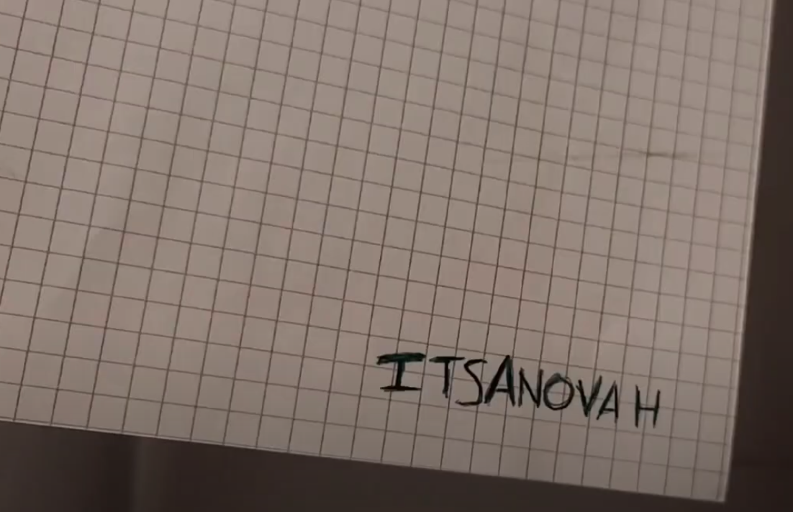

This is no just paper, this is Paper. A thing you have never seen.
This is an oppertunity to see more then you could and be more then you are. Made using fibres and science, this is the next step for humanity.
The core of the ItsApaper is a desire, a desire to fufill. There is a aching gap within the people for something more then just a tool, something more then just an object, something that will be our friend.
ItsApaper was created in order to help the world achieve the best form of communication in history. Paper has been misunderstood for a long time. The creation of Paper is largely ignored. We intend to change this.
How is Paper made?
Grind down the trees, mulching, drying blah blah blah! Why get bogged down with the details? Just enjoy the product.
THE PAPER DRINKS
ItsAnovah was born in 2004 and from the moment she was born, she knew she loved Paper. The feel , the grace and (most of all) the utility.
Paper is something that few people actually think about but ItsAnovah has never once stopped. When questioned about her love for Paper, ItsAnovah states that:
"Paper is so good, mmmmmmmm yes Paper, the best, forErealAforTreal forTrealHforEreal forPrealAforPrealEforRreal. F O R R E A L"
We are so happy to have the world famous ItsAnovah on bored with our Company. ItsAnovah has done a lot of research on Paper and the best ways to make, bake and sell Paper using new techniques that have been previously unheard of.
THE PAPER CONSUMES
The Founder, Discoverer and Creator.
UNDER WORKS
THE PAPER SLEEPS
